6.6 状态与会话：让 Web 系统真正“认得人”
在上一讲“重构：在项目中使用 SQLite”中，我们顺利完成了 ZeroTech 文本分析系统的存储层解耦，将历史记录持久化移交给了嵌入式关系型数据库 SQLite，并通过索引大幅优化了检索效率。
然而，如果将当前的代码直接打包部署上线，系统将遭遇灾难性的隐私灾难与体验坍塌：所有的访客记录全都被无差别地塞在同一张 history 数据表中，任何人只要访问页面，就能一览无余地查看到全网所有陌生用户输入的历史记录！
本讲作为“零到全栈”模块六（后端与数据基石）的终极大收官，将深入探究 Web 底层最为迷人的核心机制——状态（State）与会话（Session）。我们将剖析 HTTP 协议与大模型 API 为何生来是无状态（Stateless）的架构取舍，系统梳理 Cookie、Session 与 Token 的核心差异，通过 CORS 跨域凭证传递、UUID、数据库复合索引与 FastAPI 响应头下发，彻底为 ZeroTech 实现工业级多用户历史记录隔离，并以全局视角对比 Web 会话与大模型上下文工程（Context Engineering）的底层逻辑。
目录
- 隐私灾难：为什么“不认人”的网站无法投入生产？
- 计算机哲学：HTTP 与大模型的无状态（Stateless）本质
- 破局之道：会话（Session）与 Cookie 的精妙配合
- Cookie 核心属性体系与跨源（CORS）凭证配置
- 数据库改造：
session_id字段与联合复合索引 - 服务端实现：UUID 凭证颁发与数据层多租户隔离
- 全链路抓包验证与双浏览器隔离实战
- 深度拓展：大模型（LLM）是如何实现“会话记忆”的？
- 模块六全景复盘与模块七（全栈部署）路线展望
一、隐私灾难：为什么“不认人”的网站无法投入生产？
(参考时间: 00:00 - 03:40)
在进入本讲前，我们在 ZeroTech 前端中补充了历史记录查看弹窗（通过请求后端 /api/history 接口获取数据）。
此时，如果开发者在电脑上做这样一个极具代表性的对比实验：
1. 在 Google Chrome 浏览器中打开文字实验室，输入并分析句子：“生活没有标准答案”。
2. 随后启动另一个完全独立的浏览器（如 Apple Safari 或 Microsoft Edge，亦或是 Chrome 无痕模式），访问相同的网址，直接点击历史记录弹窗。
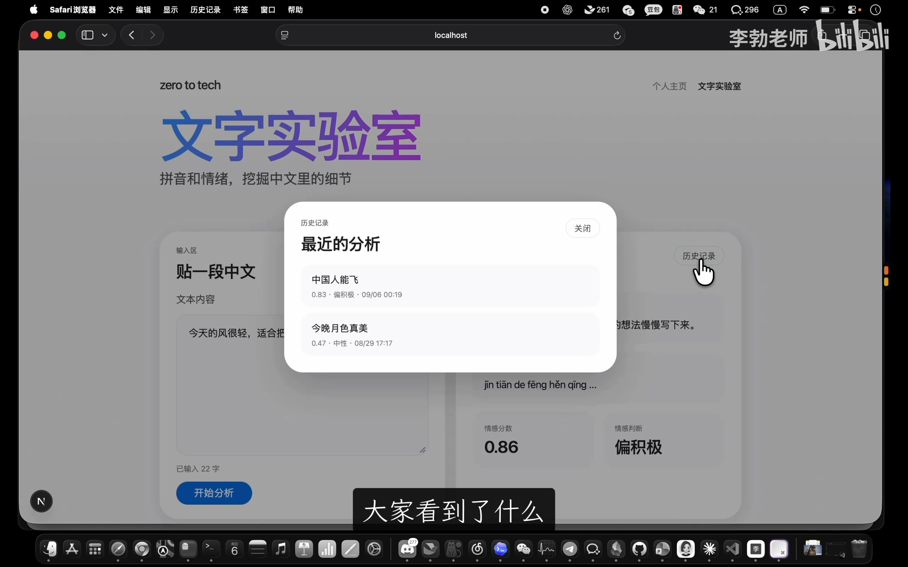
📷 双浏览器间历史记录混杂泄露实测
在 B 站中打开 (00:02:04)
令人震惊的现象发生了：Safari 浏览器的弹窗中，竟然赫然列出了刚才在 Chrome 中输入的分析记录！
flowchart LR
subgraph ClientEnv["客户端多租户环境"]
U1["用户 A - Chrome 客户端"]
U2["用户 B - Safari 客户端"]
end
subgraph BackendSvc["单体后端服务"]
S["FastAPI /api/history 路由"]
end
subgraph GlobalDB["全局单张数据表"]
DB[("history.db<br/>无租户区分，全量无序堆积")]
end
U1 -->|1. 写入文本 '今晚月色真美'| S
U2 -->|2. 请求获取历史数据| S
S -->|3. 全量 SELECT * 出表数据| DB
DB -->|4. 返回全站所有人历史记录| S
S -->|5. 隐私彻底泄露！| U2
这一实验逼真地模拟了生产环境中两位素不相识的陌生用户：如果后端不具备“认人”的能力，所有用户在输入框键入的敏感字符都将对全网公开。因此，赋予 Web 系统区分独立访客、实现数据隔离的能力，是任何生产级应用不可逾越的底线。
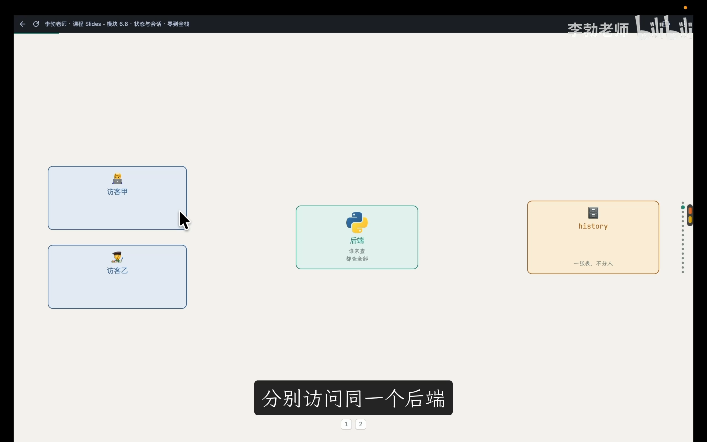
📷 后端不区分访客导致隐私全量混杂示意图
在 B 站中打开 (00:02:45)
二、计算机哲学：HTTP 与大模型的无状态（Stateless）本质
(参考时间: 03:40 - 13:40)
系统之所以“不认人”，根本原因在于 HTTP 协议的骨子里是彻底无状态（Stateless）的。
1. HTTP 为什么被刻意设计为无状态？
在 HTTP 的规范中，一次交互仅仅是一轮由客户端发起、服务端响应的单次闭环：
sequenceDiagram
autonumber
participant C as 浏览器客户端
participant S as 服务端 (FastAPI)
C->>S: HTTP Request 1 (携带文本)
S-->>C: HTTP Response 1 (返回分析结果)
Note over S: 这一轮请求响应结束，服务端立即物理抹除所有上下文！
C->>S: HTTP Request 2 (查看历史)
Note over S: 在服务端眼里，这是来自外太空的一个全新、陌生、独立的请求！
S-->>C: HTTP Response 2 (无法识别是谁)
很多初学者容易将“无状态”误当成 HTTP 协议的设计缺陷，但恰恰相反——无状态是现代互联网能够承载全球数十亿人并发访问的至尊基石！
我们可以将 HTTP 与典型的有状态协议（如用于远程登录服务器的 SSH 协议）进行深度对比：
| 对比维度 | 有状态协议（如 SSH） | 无状态协议（如 HTTP） |
|---|---|---|
| 连接形态 | 极少量的长时间持续连接 | 海量、极短生命周期、高频并发连接 |
| 内存开销 | 服务端必须为每个连接在内存常驻现场 | 请求处理完毕即刻释放内存，无常驻包袱 |
| 弹性负载均衡 | 极差（后续所有请求必须锁死在同一台服务器） | 极致优秀（任何一台服务器都能接管任意请求，网关任意分流） |
| 节点容灾弹性 | 服务器节点宕机，所有用户现场全毁 | 某台服务器宕机，流量无缝漂移至备用机，用户毫无感知 |
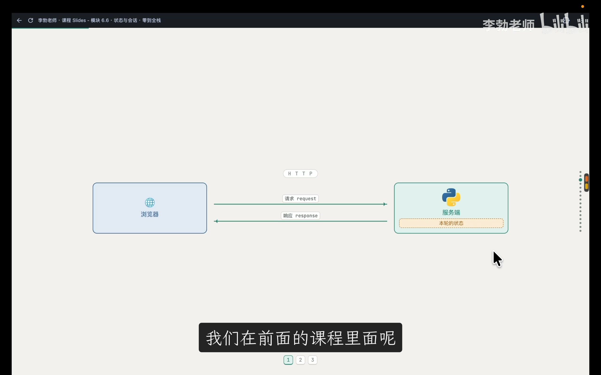
📷 HTTP单次闭环与无状态机理
在 B 站中打开 (00:04:06)
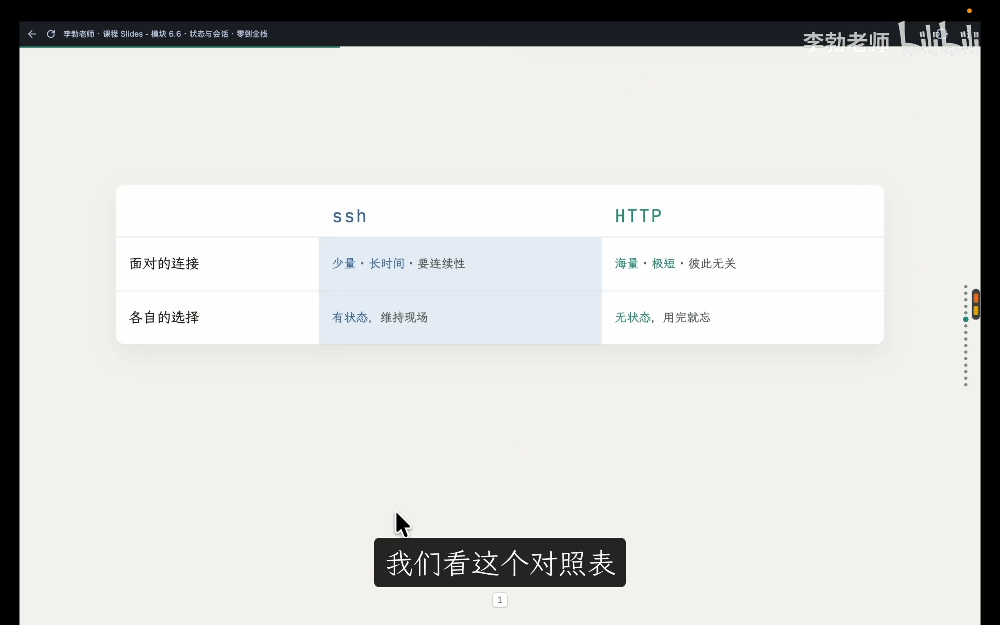
📷 有状态与无状态架构特性对比表
在 B 站中打开 (00:13:16)
[!NOTE] 架构的取舍（Trade-off） 如果把 HTTP 协议本身做成有状态的，面对双十一千万级并发请求时，没有任何一台单机内存能存得下千万份会话现场，更无法实现弹性扩容缩容。因此，协议底层坚决选择“遗忘”，将“如何记忆用户”的权利和责任完整交给了上层应用层。
2. 大模型 API（LLM）同样是纯粹的无状态
不仅 Web 协议如此，当今最前沿的生成式大语言模型（LLM，如 DeepSeek、OpenAI GPT、Claude）在 API 层面同样是彻底无状态的。
我们在终端中使用 curl 命令调用 DeepSeek API 进行实测：
- 第一步：向模型发送 curl 请求：“你好，我的名字叫李博。”模型礼貌回复：“你好李博，很高兴认识你！”
- 第二步：紧接着发送第二条 curl 请求：“请问我叫什么名字？”
- 模型的回答令人大跌眼镜：“抱歉，我不知道您的名字，请告诉我该如何称呼您。”
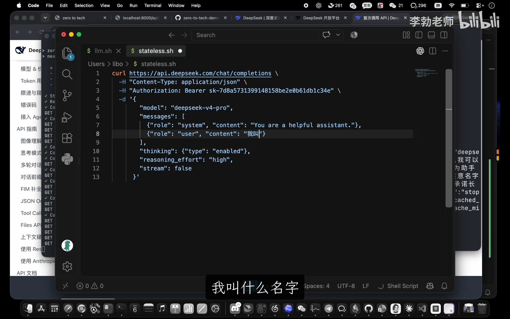
📷 curl调用DeepSeek体验大模型无状态遗忘
在 B 站中打开 (00:07:31)
大模型在生成完最后一个 Token 后，其计算图和注意力缓存便随之销毁，对于它而言，下一次请求永远是“人类对它说的第一句话”。
三、破局之道：会话（Session）与 Cookie 的精妙配合
(参考时间: 13:40 - 22:20)
既然底层协议追求遗忘，而人类的业务活动（如查看自己的历史、购物车、下订单）又必须拥有前因后果，矛盾该如何化解？
工程界给出的精妙答案是：“以最小的开销，在应用层把状态长回来！”
1. 存包柜模型：会话（Session）的抽象
我们不需要把整个用户的所有历史数据塞在每一个请求里来回传输，这如同我们去超市使用自动存包柜：
1. 顾客（客户端）把包裹交给柜台（服务端）。
2. 柜台把包裹放入柜子，生成一个唯一的纸条编码（如 088），交还给顾客。
3. 柜台服务员根本不需要认识顾客的长相，只要下次顾客带着纸条 088 前来，柜台就能精准取出对应的包裹。
flowchart TD
subgraph BrowserSide["浏览器端"]
B["浏览器"]
end
subgraph ServerSide["服务端 (FastAPI)"]
S["后端路由处理"]
end
subgraph PersistDB["持久化数据库"]
DB[("history.db<br/>每行携带 session_id 标签")]
end
B -->|1. 首次请求: 无凭条| S
S -->|2. 生成宇宙唯一 UUID| S
S -->|3. Set-Cookie: session_id=uuid4| B
B -->|4. 后续请求: 自动携带 Cookie: session_id=uuid4| S
S -->|5. 携 session_id 过滤写入/查询| DB
DB -->|6. 仅返回属于该 session_id 的数据| S
S -->|7. 用户仅看到自己的历史| B
在计算机科学中： - 会话（Session）：将一连串原本孤立、无状态的 HTTP 请求，在业务逻辑上认定为同一个来访者的连续交互。它是一种逻辑关系。 - Cookie：浏览器为服务端在本地代管的一小块键值对数据，并在后续同源请求中自动通过 HTTP 头携带回传的物理载体。
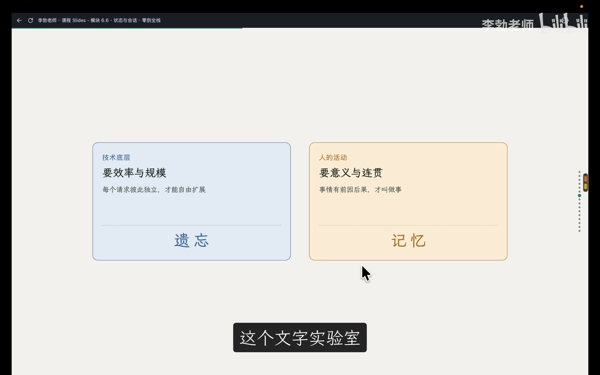
📷 存包柜模型与Session会话串联机理
在 B 站中打开 (00:16:32)
2. 面试高频考点：Cookie 与 Session 的本质区别
很多面试经常考问：“请简述 Cookie 和 Session 的区别？” 许多开发者容易将其混为一谈。
- Session（会话）是概念与关系：是服务器为了跟踪用户状态而建立的上下文会话。
- Cookie 是技术与工具：是浏览器提供的一种轻量存储与自动传输机制。
- 两者的交集：在 Web 体系中，服务器生成一个随机唯一的 session_id，利用 Set-Cookie 响应头下发给浏览器，浏览器后续通过 Cookie 请求头带回该 ID，从而达成会话保持。而在手机原生 App 中没有 Cookie，工程师则通常将 session_id 放在名为 Authorization: Bearer <token> 的自定义请求头中传递，底层哲学完全相通。
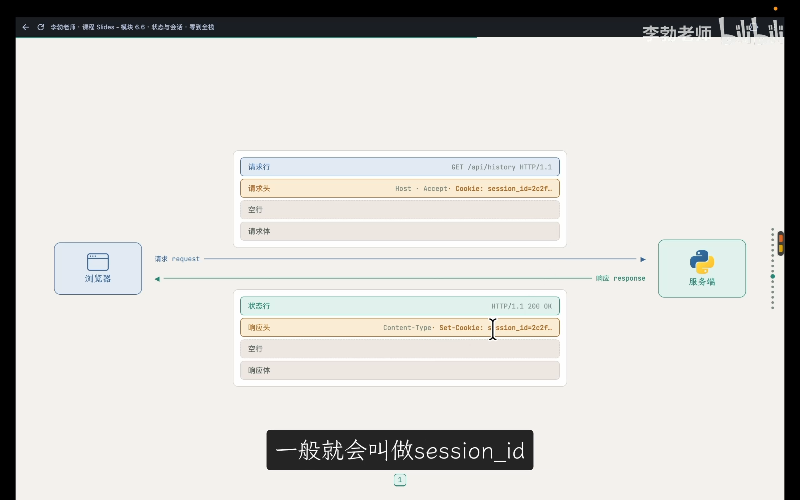
📷 Session与Cookie本质区别对比剖析
在 B 站中打开 (00:21:30)
四、Cookie 核心属性体系与跨源（CORS）凭证配置
(参考时间: 22:20 - 29:15)
1. 一个合格 Cookie 的安全属性体系
当后端向前端签发凭证时，并不是简简单单写入一个字符串，而必须附带严密的安全指令集：
Set-Cookie: session_id=a1b2c3d4; Max-Age=2592000; Path=/; HttpOnly; SameSite=Lax
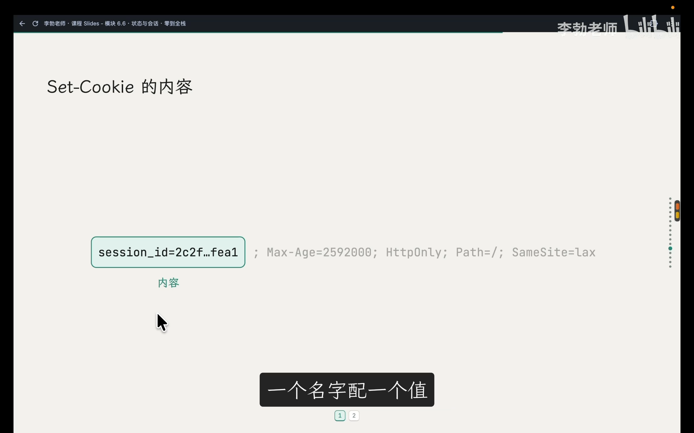
📷 Cookie核心安全属性详解
在 B 站中打开 (00:25:06)
各核心属性深度解析：
1. session_id=...：键值对主体，承载真正的凭证内容。
2. Max-Age=2592000：生命周期（以秒为单位，此处为 $30 \times 24 \times 3600 = 30$ 天）。
[!IMPORTANT] 若不指定 Max-Age 会发生什么？ 若缺省，该 Cookie 将退化为“会话级 Cookie（Session Cookie）”，保存在内存中，只要用户完全关闭浏览器，凭证就会被瞬间抹除！ 3.
HttpOnly：防跨站脚本（XSS）攻击铁律。声明该 Cookie 禁止被网页内 JavaScript 代码（如document.cookie）直接读取，仅由浏览器在 HTTP 网络传输中收发，杜绝了恶意 XSS 脚本窃取身份令牌。 4.SameSite=Lax：防跨站请求伪造（CSRF）防护策略，限制第三方网站在跨站跳转或嵌入请求时携带本站 Cookie。 5.Path=/：作用域路径，声明在当前域名下的所有子路径请求均默认携带该 Cookie。
2. 跨源（CORS）环境下的凭证传输配置
由于我们的 ZeroTech 前端运行在 http://localhost:3000，而后端运行在 http://localhost:8000，端口不同构成了典型的跨源请求（Cross-Origin Request）。
现代浏览器为了安全，默认禁止跨源请求携带任何 Cookie！必须双向开绿灯：
flowchart TD
subgraph FrontendConfig["前端配置 (Next.js / Fetch)"]
A["fetch('/api/...', {<br/> credentials: 'include'<br/>})"]
end
subgraph Sandbox["浏览器安全沙箱"]
B{"两端均明确放行?"}
end
subgraph BackendConfig["后端配置 (FastAPI)"]
C["CORSMiddleware(<br/> allow_origins=['http://localhost:3000'],<br/> allow_credentials=True<br/>)"]
end
A --> B
C --> B
B -->|是| D["允许携带跨源 Cookie 顺畅通信"]
B -->|否| E["浏览器无情拦截 Cookie 导致会话失效"]
- 后端 FastAPI 中间件改动：
python app.add_middleware( CORSMiddleware, allow_origins=["http://localhost:3000"], # 注意：启用凭据时严禁写通配符 '*' allow_credentials=True, # 必须显式开启凭证许可 allow_methods=["*"], allow_headers=["*"], ) - 前端
fetch改动：在InputCard.tsx（提交文本分析）与TextLabView.tsx（加载历史弹窗）中，调用fetch时必须显式声明：javascript credentials: "include" // 明确要求浏览器在跨源时带上本地凭据
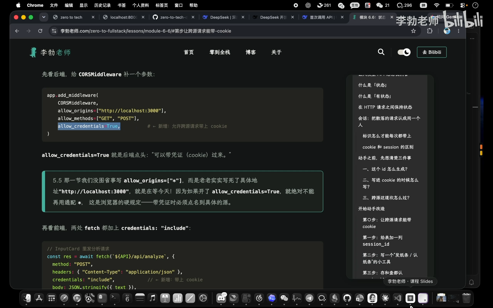
📷 CORS跨源凭据双向配置实操
在 B 站中打开 (00:27:49)
五、数据库改造：session_id 字段与联合复合索引
(参考时间: 29:15 - 32:40)
为了让数据库具备用户感知能力，我们需要对 backend/storage.py 中的表结构和索引进行关键升级。
1. 表结构扩展
在 history 数据表中增加 session_id TEXT 字段：
CREATE TABLE IF NOT EXISTS history (
id INTEGER PRIMARY KEY AUTOINCREMENT,
session_id TEXT,
text TEXT,
score REAL,
label TEXT,
pinyin TEXT,
created_at TEXT
);
2. 联合复合索引的设计哲学（Composite Index）
在上一讲中，我们只对 created_at 建立了单列索引。而现在，我们的高频查询变为了：
“筛选出指定
session_id的记录，并且按照created_at DESC倒序排布！”
此时，必须建立基于两个字段的联合复合索引：
CREATE INDEX IF NOT EXISTS idx_history_session_created
ON history(session_id, created_at);
flowchart TD
subgraph CompositeIndex["联合索引 idx_history_session_created 结构"]
A["B-Tree 第一层排序维度: session_id<br/>(精确快速定位到属于该会话的局部数据分区)"]
A --> B["B-Tree 第二层内部有序维度: created_at<br/>(在会话分区内部天然按照时间递增排布)"]
end
B --> C["极速检索: 引擎精准下探分区并从末尾逆向回表提取，耗时接近 0ms!"]
[!TIP] 联合索引字段顺序的黄金准则：最左匹配原则 先写用于等值过滤（WHERE session_id = ?）的字段，后写用于范围或排序（ORDER BY created_at）的字段。如果顺序颠倒写成
(created_at, session_id)，索引将被全表打散，无法发挥前置分区的威力。
由于 SQLite 无法在现有表上通过 CREATE TABLE IF NOT EXISTS 追加字段，我们在开发期直接删除老旧的 backend/history.db 文件，重启应用让全新的 DDL 重新生成。
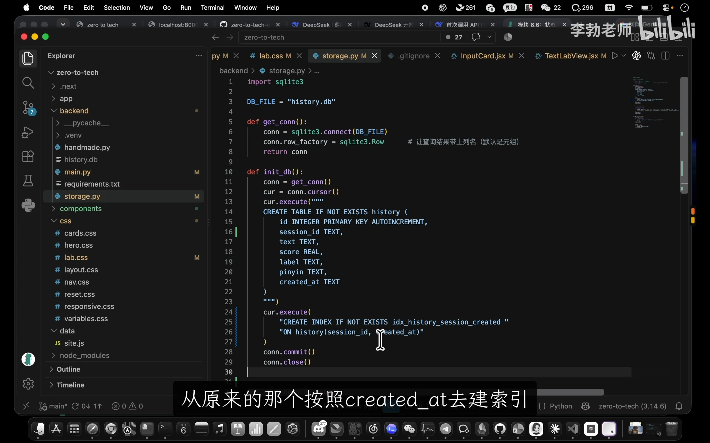
📷 数据库表结构增加session_id与复合索引
在 B 站中打开 (00:30:16)
六、服务端实现：UUID 凭证颁发与数据层多租户隔离
(参考时间: 32:40 - 38:25)
1. 使用 Python 标准库 uuid 生成防碰撞会话 ID
会话 ID 必须满足两个严苛条件：全局唯一且无法被猜测。
Python 标准库提供了 uuid.uuid4()，基于强伪随机数生成 128 位的通用唯一识别码（形如 c83f12a9-4b6e-4c7a-9321-7e8e50b16f2c）。两个 UUID4 重复的概率约等于在宇宙两端各扔一粒沙子发生相撞的概率，在实际工程中可视为绝对不重复。
在 backend/main.py 中编写凭据分发辅助函数：
import uuid
from fastapi import Request, Response
def get_session_id(request: Request, response: Response) -> str:
"""提取现有会话ID；若不存在则签发全新 UUID 并写入 Set-Cookie 响应头"""
session_id = request.cookies.get("session_id")
if not session_id:
session_id = str(uuid.uuid4())
response.set_cookie(
key="session_id",
value=session_id,
max_age=30 * 24 * 60 * 60, # 30天
httponly=True,
samesite="lax"
)
return session_id
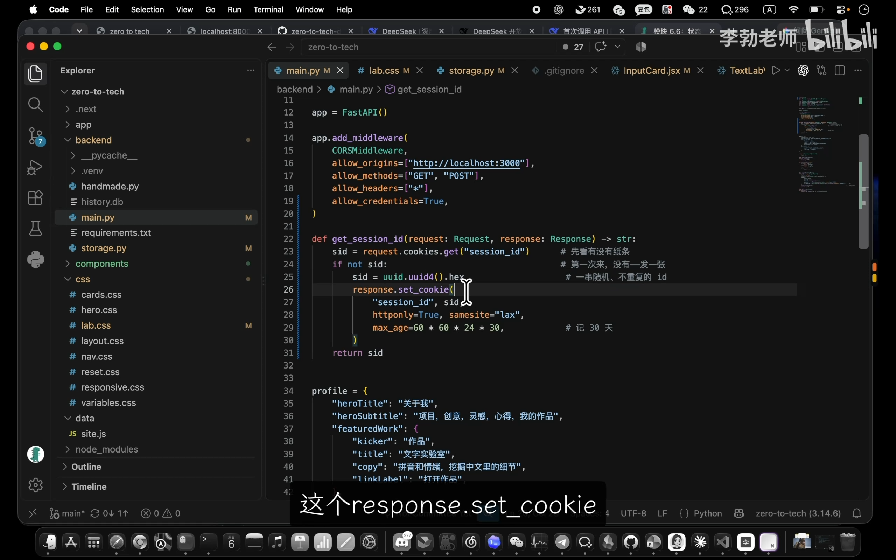
📷 get_session_id凭证下发函数实现
在 B 站中打开 (00:34:03)
2. 存储层接入 session_id 过滤
在 backend/storage.py 中，全面改写数据读写接口：
def save_record(session_id: str, record: dict):
"""持久化记录时，强制绑定当前用户的 session_id"""
conn = get_conn()
cur = conn.cursor()
cur.execute('''
INSERT INTO history (session_id, text, score, label, pinyin, created_at)
VALUES (?, ?, ?, ?, ?, ?)
''', [
session_id,
record.get("text"),
record.get("score"),
record.get("label"),
record.get("pinyin"),
record.get("created_at")
])
conn.commit()
conn.close()
def get_history(session_id: str, limit: int = 10):
"""严格按 session_id 进行租户隔离查询"""
conn = get_conn()
cur = conn.cursor()
cur.execute('''
SELECT * FROM history
WHERE session_id = ?
ORDER BY created_at DESC
LIMIT ?
''', [session_id, limit])
rows = cur.fetchall()
conn.close()
return [dict(row) for row in rows]
在 main.py 的路由中，无论是 /api/analyze 还是 /api/history，第一件事都是获取 session_id，并将其作为第一参数传递给存储层，彻底终结了“不认人”的混乱局面！
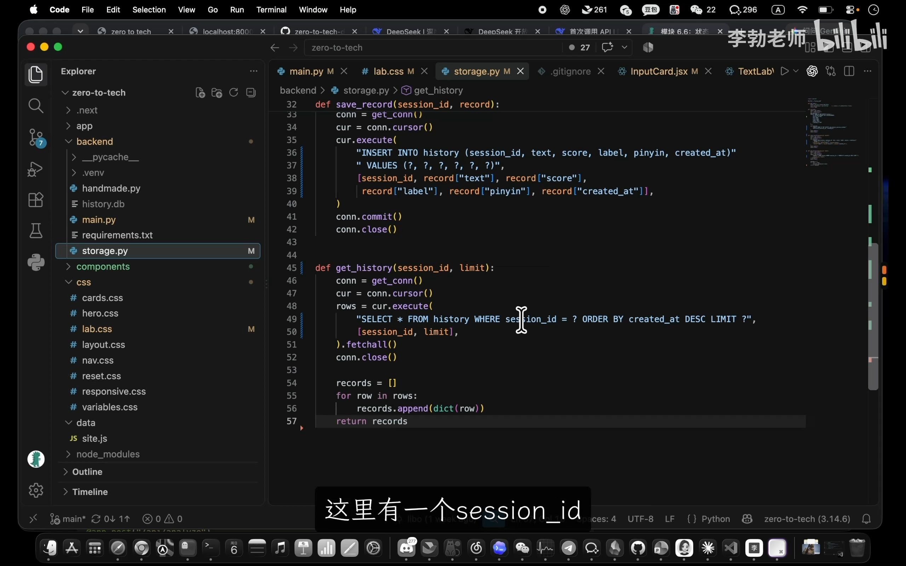
📷 存储层改造实现租户隔离查询
在 B 站中打开 (00:36:50)
七、全链路抓包验证与双浏览器隔离实战
(参考时间: 38:25 - 43:10)
代码编写完成后，我们进行严谨的三级验证。
1. 命令行 curl 抓包观测 Set-Cookie
通过终端向后端发送探针请求：
curl -i http://localhost:8000/api/history
在返回的原始响应报文中，可以清晰看到后端发放的“小纸条”：
HTTP/1.1 200 OK
set-cookie: session_id=e7b45821-2e65-4d0c-a9a5-17a4c7e6ebbb; Max-Age=2592000; Path=/; HttpOnly; SameSite=lax
content-type: application/json
由于 curl 默认不保留 Cookie，再次执行该命令时，服务器会认为又来了一位新访客，签发一个全新的 UUID。
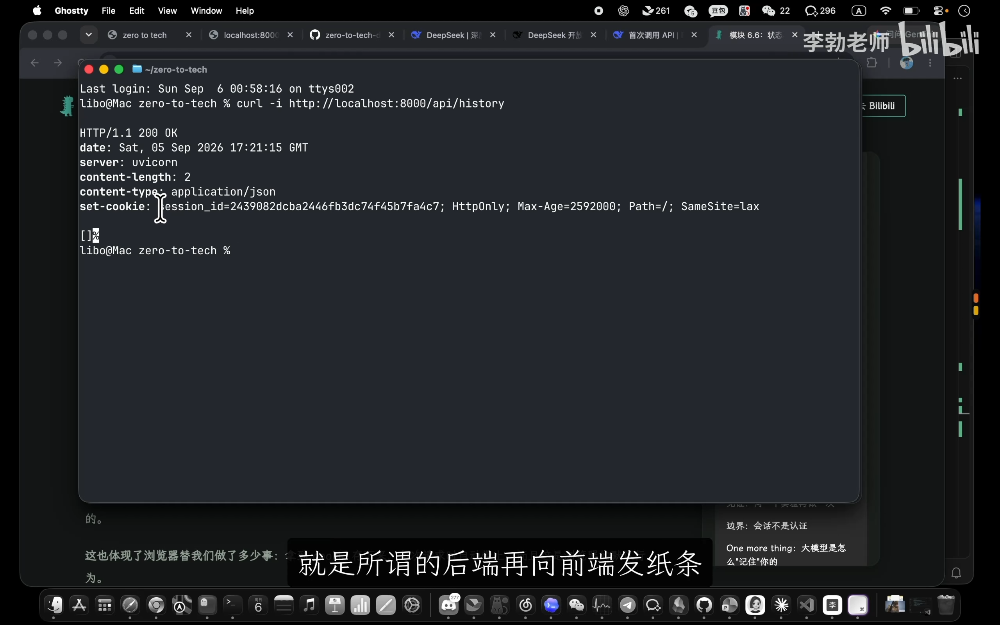
📷 curl抓包观测Set-Cookie响应头
在 B 站中打开 (00:39:03)
2. 浏览器开发者工具（DevTools）全链路核查
在 Chrome 浏览器中打开文字实验室：
1. 打开 DevTools -> Application -> Storage -> Cookies，可以看到名为 session_id 的 Cookie 已经稳稳写入，且 HttpOnly 标记勾选生效。
2. 切换到 Network 选项卡，查看向 /api/history 发起的请求头，可以清晰看到 Cookie: session_id=... 已经由浏览器内核在每次网络请求时自动携带！
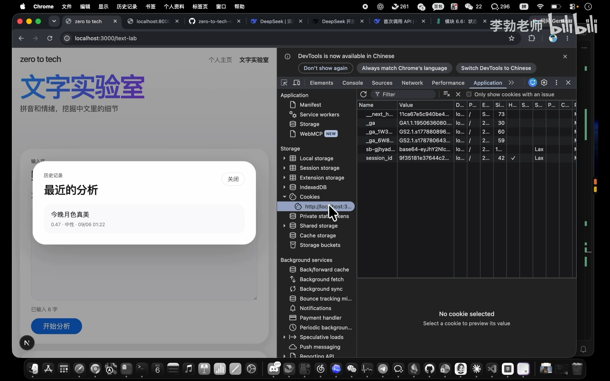
📷 Chrome DevTools中查看Cookie存储与回传
在 B 站中打开 (00:40:41)
3. 终极对决：Chrome vs Safari 双浏览器实测
重演开篇时的实验： - 在 Chrome 中输入分析：“今天天气真好”； - 在 Safari 中输入分析：“这个电影真好看”； - 分别点开各自的历史记录弹窗。
结果令人振奋：Chrome 仅展示属于 Chrome 的分析历史，Safari 仅展示属于 Safari 的分析足迹！系统成功达成了多租户级别的会话隔离，文字实验室已具备了健壮的生产雏形！
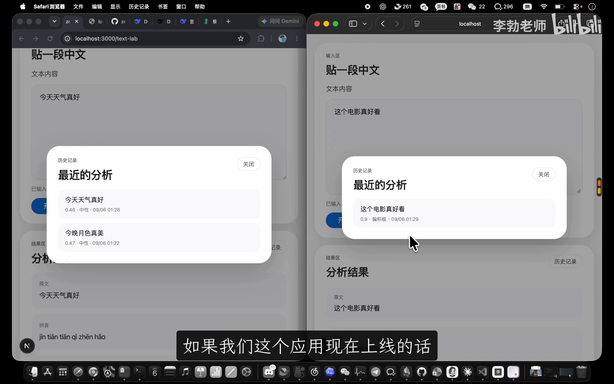
📷 双浏览器隔离验证圆满成功
在 B 站中打开 (00:43:04)
八、深度拓展：大模型（LLM）是如何实现“会话记忆”的？
(参考时间: 43:10 - 48:45)
在理解了 Web 体系的会话机制后，我们回过头来解开第二节留下的悬念：“既然大模型 API 是无状态的，为什么 ChatGPT、Claude 或日常 AI 编程工具能够记住我们的多轮对话？”
1. 核心机理揭秘：客户端全量上下文回传
答案出人意料地质朴：大模型服务端根本没有记住任何东西，所有的‘记忆’都是由客户端在每一次发起调用时，将历史对话全部塞入 messages 数组重新提交的！
sequenceDiagram
autonumber
participant App as 客户端 (Chat Web / AI Agent)
participant LLM as 大语言模型服务端 (DeepSeek)
Note over App: 第一轮对话
App->>LLM: messages: [{"role": "user", "content": "我的名字叫李博"}]
LLM-->>App: "你好李博，有什么可以帮你的？"
Note over App: 客户端自行将第一轮问答追加进历史上下文列表！
Note over App: 第二轮对话 (看似有了上下文记忆)
App->>LLM: messages: [<br/> {"role": "user", "content": "我的名字叫李博"},<br/> {"role": "assistant", "content": "你好李博，有什么可以帮你的？"},<br/> {"role": "user", "content": "我叫什么名字？"}<br/>]
LLM-->>App: "您叫李博，我记得很清楚。"
我们在代码中构造包含前序上下文的 messages 请求，大模型便立刻给出了精准的回答。大模型所谓的多轮交互能力，本质上是模型强大的上下文阅读理解能力（In-Context Learning）。
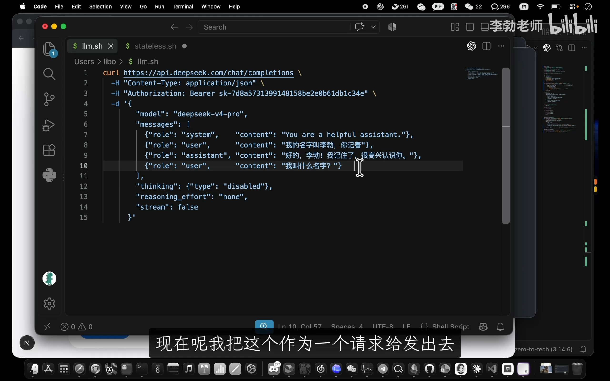
📷 大模型通过携带messages数组保持上下文
在 B 站中打开 (00:45:56)
2. Web 会话 vs 大模型会话的底层架构对比
这一对比揭示了两种截然不同的架构哲学：
| 对比维度 | 经典 Web 架构会话 | 大语言模型（LLM）会话 |
|---|---|---|
| 状态存储驻留地 | 服务端（关系型数据库 / Redis） | 客户端（由客户端或 Agent 本地维持） |
| 网络传输荷载 | 极轻（请求中仅携带几个字节的 session_id） |
极重（每一次请求都必须携带全量历史对话上下文） |
| 计费与开销 | 与会话轮次弱相关，存储成本极低 | 随对话轮次呈二次方暴增（按 Token 计费，越聊越贵） |
| 规模限制 | 理论上仅受物理磁盘存储限制 | 受大模型上下文窗口（Context Window）物理硬上限约束 |
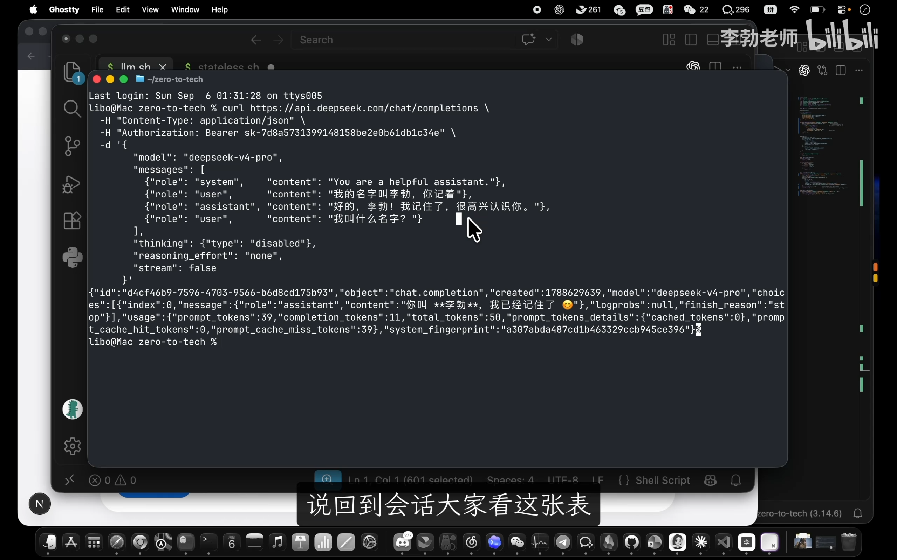
📷 Web会话与大模型上下文机制全景对比
在 B 站中打开 (00:47:44)
理解了这一点，在现代 AI Agent（如 Claude Code、Cursor、Windsurf）开发中所接触到的繁复名词瞬间迎刃而解：所谓的提示词工程（Prompt Engineering）、RAG 知识库检索、Agent Skills，其本质全都是在精打细算地决定：“在有限且昂贵的上下文窗口内，究竟塞入哪些最具价值的上下文片段！”
九、模块六全景复盘与模块七（全栈部署）路线展望
(参考时间: 48:45 - 50:56)
至此，“零到全栈”模块六（后端与数据基石）全部六讲宣告圆满收官！
flowchart TD
Root["模块六: 后端与数据基石"]
Root --> M1["6.1 第三方库与 PyPI: 虚拟环境与包管理生态"]
Root --> M2["6.2 真实文本分析: 集成 SnowNLP 与 pypinyin"]
Root --> M3["6.3 数据库前传: 文件存储实践与并发OOM缺陷"]
Root --> M4["6.4 数据库正传: 关系模型与参数化防注入铁律"]
Root --> M5["6.5 架构重构实践: 抽离 storage.py 与索引调优"]
Root --> M6["6.6 状态与会话: 无状态协议哲学与 Cookie 多租户隔离"]
回顾这六讲，我们的 ZeroTech 系统完成了一次脱胎换骨的跃迁： - 从纯玩具走向工程落地：从最初硬编码的假数据，演进为真正具备自然语言计算能力、安全 SQLite 持久层、支持多租户会话隔离的现代化全栈架构。 - 构建了完备的工程武器库：熟练驾驭 Python、FastAPI、SQLite、SQL 注入防御、代码重构思维、B-Tree 索引优化与 HTTP 状态管理。
下一阶段：迈向模块七（云端全栈部署）
当前，我们的全栈应用由三部分组成：静态编译的 Next.js 前端、FastAPI 驱动的后端 API、以及本地的 SQLite 数据库。
在即将开启的模块七（上线与部署实战）中，我们将踏上真正的云端运维征程：
1. 构建生产级前端：学习 Next.js 前端工程在云端的高性能构建。
2. 守护后端常驻：使用 Linux systemd 将 Python 后端提升为 7×24 小时高可用守护进程。
3. 同源化架构收口：配置 Nginx 反向代理与云端域名，彻底消除跨源 CORS 烦恼，让前后端融为一体！
感谢大家在模块六中的坚持与同行，我们模块七云端见！